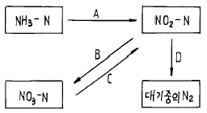
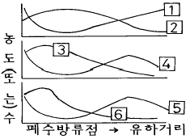
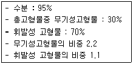

수질환경산업기사 (2003-03-16 기출문제)
1과목: 수질오염개론
1. 콜로이드의 안정을 도모하기 위하여 입자를 분산상태로 유지하는 힘이 아닌 것은?
- 중력
- 반데르발스힘(Van der waals)
- 이온강도(ionic strength)
- 제타 포텐셜(zeta potential)
(정답률: 알수없음)

2. 완전혼합형반응조에 관한 설명으로 알맞지 않은 것은?
- 통계학적인 분산이 1 이면 이상적인 완전혼합상태 이다.
- 단로흐름으로 dead space를 동반할 수 있다.
- Morrill지수의 값은 1 이다.
- 분산수는 무한대의 값을 갖는다.
(정답률: 알수없음)
3. 96hr TLm은 Cu＋2 = 1.0mg/ℓ , CN- = 0.1mg/ℓ , NH31 =2.0mg/ℓ 이고 실제실험수의 농도가 Cu＋2 = １.２mg/ℓCN-= 0.0４mg/ℓ , NH3= 0.６mg/ℓ 이었다면 toxic unit는?
- 1.1
- 1.3
- 1.6
- 1.9
(정답률: 알수없음)
4. 해수의 담수화에 관한 설명으로 옳지 않은 것은 ?
- 단물은 1000mg/L이하의 염을 포함한다.
- 역삼투법은 반투막과 정수압을 이용하여 순수한 물을 분리하는 방법이다.
- 해수는 대략 35000mg/L의 염을 포함한다.
- 증발법은 가장 오래된 담수화방법으로 에너지가 많이 소모되며 해수 염의 농도에 따라 열 및 동력요구량이 크게 달라진다.
(정답률: 알수없음)
5. 녹조류에 대한 설명으로 가장 알맞은 것은 ?
- 박테리아 보다는 산성조건과 건조한 환경에서 보다 잘견디는 다세포식물로 팽화의 주된 원인이 된다.
- 섬유상이나 군락상의 단세포로 구성되며 숫적으로 대량 성장한다.
- 봄,가을에 순간적인 급성장을 보이며 규사로 찬 세포벽을 가지며 때로는 운동성이 있다.
- 종류는 단세포와 다세포가 있으며,비운동성이 있는가 하면 유영편모를 갖춘것도 있다.
(정답률: 알수없음)
6. 생물학적 폐수처리시의 대표적인 미생물인 호기성 Bacteria의 경험적 분자식을 나타낸 것은?
- C5H7O2N
- C5H9O3N
- C2H5O3N
- C2H7O5N
(정답률: 알수없음)
7. 다음 그림중 탈질소화(Denitrification)과정만으로 짝지어진 것은?

- A, B
- C, A
- B, D
- C, D
(정답률: 알수없음)
8. 크기가 300m3인 반응조에 색소를 주입할 경우,주입농도가 150㎎/ℓ 이었다. 이 반응조에 연속적으로 물을 넣어 색소 농도를 2㎎/ℓ 로 유지하기 위하여 필요한 소요시간은 ? (단, 유입유량은 5m3/hr 이며, 반응조내의 물은 완전혼합,1차반응이라 가정한다.)
- 2⑤시간
- 215시간
- 260시간
- 295시간
(정답률: 알수없음)
9. 다음에 나타낸 오수 미생물중에서 유황화합물을 산화하여 균체내 또는 균체외에 유황입자를 축적하는 것은 ?
- Zoogloea
- Sphaerotilus
- Beggiatoa
- Crenothrix
(정답률: 알수없음)
10. 유기성 오수가 하천에 유입된 후 유하하면서 자정작용이 진행되어 가는 여러상태를 밑그림으로 표시하였다. (1) - (6)까지 내용으로 바르게 짝지어진 것은? (순서대로 (1), (2), (3), (4), (5), (6))

- BOD, DO, NO3-N, NH3-N, 조류, 박테리아
- BOD, DO, NH3-N, NO3-N, 박테리아, 조류
- DO, BOD, NH3-N, NO3-N, 조류, 박테리아
- DO, BOD, NO3-N, NH3-N, 박테리아, 조류
(정답률: 알수없음)
11. BOD 300mg/ℓ 를 함유한 공장폐수 400m3/day를 처리하여 하천에 방류하고자 한다. 유량이 20,000m3/day이고 BOD2mg/ℓ 인 하천에 방류한 후 곧 완전 혼합된 때의 BOD농도를 3mg/ℓ 이하로 규정하고 있다면 이 공장폐수의 BOD제거율은 몇 % 이상이어야 하는가? (단, 하천의 다른 오염물질 유입은 없다고 가정함.)
- 52
- 69
- 71
- 82
(정답률: 알수없음)
12. 지구상에 존재하는 담수의 형태중 가장 많은 부분을 차지하고 있는 것은 ?
- 지하수
- 호수 및 하천
- 빙하나 극지의 얼음
- 토양수분 및 대기
(정답률: 알수없음)
13. Formaldehyde(CH2O) 870㎎/ℓ 의 이론적인 COD는?
- 928㎎/ℓ
- 902㎎/ℓ
- 886㎎/ℓ
- 816㎎/ℓ
(정답률: 알수없음)
14. 다음 BOD에 대한 설명으로서 적당하지 못한 것은 ?
- 호기성 미생물에 의해 유기물이 산화 분해될 때 소비되는 산소량이다.
- 유기물이 완전히 분해 또는 안정화 되는데 사용된 산소의 양을 최종 BOD라 한다.
- 최종 BOD 측정은 보통 20일 정도 걸리나 BOD시험은 보통 5일 BOD로 한다.
- 질소화합물의 산화를 보통 1단계 BOD라 하며 보통 8일내에 완전 질산화가 이루어진다.
(정답률: 알수없음)
15. 알카리도에 대한 설명중 틀린 것은 ?
- 총알카리도는 처음 pH에서 pH 5.3까지 소요된 산의 양을 CaCO3로 환산한 양을 말한다.
- 총알카리도를 측정할 때 사용하는 지시약은 메틸 오렌지이다.
- 자연수중의 알카리도 원인물질은 HCO3-, CO32-, OH-이다.
- 자연수의 알카리도는 석회암등의 지질에 의해 변할 수 있다.
(정답률: 알수없음)
16. 분뇨처리후 방류수 잔류염소를 3mg/L로 하고자 한다. 하루 방류수 유량이 600m3이고 염소요구량이 4mg/L 이라면 염소는 하루에 얼마나 필요한가?
- 0.6 ㎏/day
- 1.8 ㎏/day
- 2.4 ㎏/day
- 4.2 ㎏/day
(정답률: 알수없음)
17. 우리나라 수거분뇨에 관한 설명으로 알맞지 않은 것은 ?
- 다량의 유기물을 함유하고 있고 고액분리가 어렵다.
- 분과 뇨의 구성비는 약 1:8∼10이고 고형물의 비는 7:1 정도이다.
- 질소화합물의 농도가 높아 소화조내의 pH강하를 막아주는 완충작용을 한다.
- BOD/COD의 비는 도시하수보다 2.7-2.9배로 분해 가능한 물질이 상대적으로 많은 량을 차지한다.
(정답률: 알수없음)
18. 다음중 부영양호(eutrophic lake)의 특성은 ?
- 생산과 소비의 균형
- 낮은 영양 염류
- 조류의 과다발생
- 높은 종의 다양성
(정답률: 알수없음)
19. 산소전달속도에 대한 설명이다. 틀린 것은 ?
- 기포가 작을수록 커진다.
- 교반강도가 클수록 크다.
- 수중의 용존산소농도가 높을수록 크다.
- 공기중의 산소분압이 낮아지면 감소한다.
(정답률: 알수없음)
20. 다음 중 물의 물리적 성질에 관한 설명으로 옳은 것은?
- 온도가 증가하면 밀도는 감소하고 점도는 증가한다
- 온도가 증가하면 밀도는 증가하고 점도는 감소한다
- 온도가 증가하면 밀도와 표면장력은 감소한다
- 온도가 증가하면 점도는 감소하고 표면장력은 증가한다
(정답률: 알수없음)
2과목: 수질오염방지기술
21. 상수도 시설 중 착수정에 관한 설명으로 틀린 것은?
- 착수정은 2조 이상으로 분할하는 것이 원칙이나 분할하지 않는 경우에는 필히 바이패스관을 설치하여야 한다.
- 착수정에는 원수수질을 파악할 수 있는 채수시설과 수질측정장치를 설치하는 것이 좋다.
- 착수정의 용량은 체류시간을 30분 이하로 하고 수심은 2-3m 정도로 설치하여야 한다.
- 착수정의 고수위와 주변벽체 상단간에는 0.6m 이상의 여유를 두어야 한다.
(정답률: 알수없음)
22. 상수고도처리시 사용되는 생물 활성탄(BAC : Biological Activated Carbon)의 단점이라 볼 수 없는 것은?
- 활성탄의 사용시간이 단축된다.
- 활성탄이 서로 부착, 응집하여 수두손실이 증가한다.
- 정상 상태까지의 기간이 길다.
- 활성탄에 병원균이 자랄때 문제가 될 수 있다.
(정답률: 알수없음)
23. 합성세제를 제거하기 위해 생물막 공법을 채택하였다. 다음중 활성슬러지 공법과 비교하여 생물막 공법의 장.단점이라 볼 수 없는 것은 ?
- 슬러지 보유량이 크고 생물상이 다양하다.
- 균일 폭기가 어렵다.
- 유해물질에 대한 내성이 높다.
- 분해 속도가 빠른 기질제어에 효과적이다.
(정답률: 알수없음)
24. 응집제에 관한 설명으로 틀린 것은?
- 폐수처리에서 가장 널리 사용되는 응집제는 황산 알루미늄과 철염이다.
- 황산제1철은 pH가 낮을수록 응집반응이 빠르다.
- 석회는 폐수의 응집처리에 자주 이용되며 형태는 주로 소석회라고 불리우는 수산화칼슘이다.
- 염화제2철(고체상)은 분말로서 6개의 결정수를 가진다.
(정답률: 알수없음)
25. 유량이 4,000m3/day인 폐수의 BOD와 SS의 농도가 각각 200mg/ℓ 이라고 할 때 포기조의 체류시간을 6시간으로 하였다. 포기조내의 F/M비를 0.5로 하는 경우에 포기조내 MLSS 농도는?
- 1,300 mg/ℓ
- 1,400 mg/ℓ
- 1,500 mg/ℓ
- 1,600 mg/ℓ
(정답률: 알수없음)
26. 다음은 폐수특성에 따른 주된 처리법을 연결한 것이다. 연결이 적절하지 않은 것은?
- 납함유폐수 - 환원법, 수산화제2철 공침법
- 시안함유폐수 - 알칼리산화법, 전해산화법
- 6가크롬함유폐수 - 환원 및 응집 침전법
- 카드뮴함유폐수 - 수산화물침전법, 황화물침전법
(정답률: 알수없음)
27. 생물학적인 원리를 이용하여 하수내 질소나 인을 제거하는 하수고도처리 공정이 아닌 것은 ?
- Bardenpho 프로세스
- A/O 프로세스
- UCT 프로세스
- Warburg 프로세스
(정답률: 알수없음)
28. CH3COOH - 0.02M용액의 이론적 COD(mg/L)는 ?
- 678
- 1280
- 1870
- 2146
(정답률: 알수없음)
29. 다음과 같은 조건하의 활성슬러지공법을 계속 운영한다면 1일 폐슬러지양은 얼마인가 ? (단, 유량= 1000m3/d, 폭기조=500m3, Y=0.7, Kd = 0.⑤d-1, MLVSS=2500mg/ℓ , 유입BOD=400mg/ℓ , 유출BOD=40mg/ℓ ,폐슬러지량=발생슬러지량, 유출수 SS 농도는 고려하지 않음)
- 약 190kg/d
- 약 220kg/d
- 약 250kg/d
- 약 310kg/d
(정답률: 알수없음)
30. 회전생물 접촉법(RBC)의 장점이 아닌 것은?
- 운전관리상 조작이 간단하다.
- 부하변동과 유해물질에 대한 내성이 크다.
- 휴지기간에 대한 대응력이 뛰어나다.
- SS의 유출이 적고 처리수의 투명도가 좋다.
(정답률: 알수없음)
31. 유량이 20000m3/d, 체류시간 3시간인 침전지의 수면적 부하율은? (단, 침전지 깊이는 3m 이다.)
- 18m3/m2· d
- 24m3/m2· d
- 36m3/m2· d
- 48m3/m2· d
(정답률: 알수없음)
32. 1일 2,270m3를 처리하는 1차 처리시설에서 생 슬러지를 분석한 결과 다음과 같은 자료를 얻었다. 이 슬러지의 비중은?

- 1.011
- 1.034
- 1.⑤7
- 1.094
(정답률: 알수없음)
33. 침사지에 관한 설명으로 틀린 것은?
- 수로형 침사지의 길이는 최소한 30m 이상으로 한다.
- 수로형 침사지의 폐수 유속은 0.3m/sec 정도로 유지해야 한다.
- 포기식 침사지는 바닥 중앙 웅덩이에 모인 그릿을 공기펌프로 퍼 올릴 때 산기관으로 포기를 실시한다.
- 포기식 침사지는 주로 무기성의 그릿만을 제거하게 된다.
(정답률: 알수없음)
34. 고형물의 농도가 15%인 슬러지 100Kg을 건조상에서 건조 시킨후 수분이 7%로 나타났다. 감소된 물의 양은?
- 79.12Kg
- 80.95Kg
- 81.57Kg
- 83.87Kg
(정답률: 알수없음)
35. 생물학적인 원리를 이용하여 하수내 인(P)을 처리하는 고도처리프로세스 공정 중 혐기조의 역할로 가장 알맞는 것은 ?
- 유기물제거 및 용해성인의 과잉흡수
- 유기물제거 및 용해성인의 방출
- 유기물제거 및 용해성인의 흡착
- 유기물제거 및 용해성인의 응집
(정답률: 알수없음)
36. 부상조의 최적 A/S비는 0.04, 처리할 폐수의 부유물질 농도는 250mg/L, 20℃에서 414KPa로 가압할 때 반송율은 (%)? (단, f=0.8, Sa=18.7㎖/ℓ , 20℃, 1기압 = 101.35KPa)
- 6.7
- 13.4
- 20.1
- 26.8
(정답률: 알수없음)
37. 소화조의 작동이 정상적인지를 알려고 하는 방법과 가장 거리가 먼 것은?
- 주입된 슬러지양에 대한 1일 가스생산량
- 소화가스내의 CO2가 차지하는 비율
- 소화중인 슬러지의 휘발산 농도
- 슬러지의 여과율
(정답률: 알수없음)
38. 제지공장의 BOD배출 원단위가 3kg/원료-톤이다. 동일업종 공장에서 원료 40톤/일을 처리 하는 경우에 폐수량이 200m3/일이면 폐수중의 BOD농도는 몇 mg/ℓ 인가?
- 100 mg/ℓ
- 200 mg/ℓ
- 400 mg/ℓ
- 600 mg/ℓ
(정답률: 알수없음)
39. 분뇨처리에 있어서 SVI를 측정한 결과 120 이었고 SV는 30% 이었다. 포기조의 MLSS 농도는 ?
- 2,000 mg/L
- 2,500 mg/L
- 3,000 mg/L
- 3,500 mg/L
(정답률: 알수없음)
40. 다음은 질산화 미생물에 대한 설명이다. 이중 적합한 것은 어느 것인가 ?
- 혐기성이며 독립영양계 미생물
- 호기성이며 독립영양계 미생물
- 혐기성이며 종속영양계 미생물
- 호기성이며 종속영양계 미생물
(정답률: 알수없음)
3과목: 수질오염공정시험방법
41. 산성 100℃에서 KMnO4에 의한 COD 측정법의 시약만으로 묶인 것은?
- 질산 - 질산은 - 과망간산칼륨 - 수산화나트륨
- 질산 - 염산은 - 과망간산칼륨 - 수산나트륨
- 황산 - 황산은 - 과망간산칼륨 - 수산나트륨
- 황산 - 질산은 - 과망간산칼륨 - 수산화나트륨
(정답률: 알수없음)
42. 시안화합물 측정시 방해물질과 이를 제거하기 위하여 첨가하는 시약 또는 제거법으로 가장 거리가 먼 것은?
- 잔류염소 - 아스코르빈산용액
- 황화합물 - 초산아연용액
- 유지류 - 노말헥산으로 추출
- 중금속 - 아비산나트륨용액
(정답률: 알수없음)
43. 다음중 수질환경보전법의 '배출허용기준'에 관한 대장균 군수의 시험법은?
- 막여과 시험방법
- 최적확수 시험법
- 평판 집락 시험방법
- 추정 시험방법
(정답률: 알수없음)
44. 원자흡광광도법에 있어서 일반적으로 쓰이지 않는 램프는 ?
- 중공음극램프
- 방전램프
- 열음극램프
- 텅스텐램프
(정답률: 알수없음)
45. 다음 중 활성슬러지의 미생물 플럭이 형성된 경우 DO 측정을 위한 전처리 방법은?
- 칼륨명반 응집침전법
- 황산구리 술퍼민산법
- 불화칼륨 처리법
- 아지드화나트륨 처리법
(정답률: 알수없음)
46. 흡광광도 측정에서 투과율 25% 일 때 흡광도는?
- 0.1
- 0.3
- 0.6
- 0.9
(정답률: 알수없음)
47. 폐수의 화학적 산소요구량의 측정에 있어서 화학적 산소 요구량이 160mg/ℓ 라고 추정된다. 이때 0.025N KMnO4용액의 소비량은 5.2㎖이고 공시험치는 0.2㎖이다. 시료 몇 ㎖를 사용해서 시험하는 것이 적절한가? (단, f = 1 )
- 약 6
- 약 12
- 약 24
- 약 30
(정답률: 알수없음)
48. 흡광광도법에 의한 크롬 측정에 있어서 디페닐카르바지드와 반응하여 생성된 착화합물의 색은?
- 황색
- 적자색
- 녹황색
- 청색
(정답률: 알수없음)
49. 가스크로마토 그래피법으로 PCB를 정량할때 다음 사항중 관련이 없는 것은?
- 전자포획형검출기
- 석영가스 흡수셀
- 실리카겔 칼럼
- 질소캐리어 가스
(정답률: 알수없음)
50. 공정시험방법상 실온이란 ?
- 10℃ - 30℃
- 15℃ - 25℃
- 5℃ - 20℃
- 1℃ - 35℃
(정답률: 알수없음)
51. 4각 웨어에 의하여 유량을 측정하려고 한다. 웨어의 수두 0.8m, 절단의 폭 5m 이면 유량은? (단, 유량계수는 1.6이다.)
- 0.72 m3/min
- 5.72 m3/min
- 7.20 m3/min
- 9.25 m3/min
(정답률: 알수없음)
52. BOD식종 보정을 할 때 가장 정확한 결과를 갖기 위해서는 DO감소율이 5일후 어느정도 이어야 하는가 ?
- 20 - 40%
- 40 - 70%
- 50 - 90%
- 60 - 90%
(정답률: 알수없음)
53. 하천수의 오염 및 용수의 목적에 따른 채수요령중 적절한 것은?
- 수심이 2m 미만일 때는 표층수를 대표로하고 2m이상 일때는 수심 1/3 지점에서 채수한다.
- 수심이 2m 미만일 때는 수심의 1/2에서 2m이상 일때는 수심 1/3 및 2/3 지점에서 각각 채수한다.
- 수심이 2m 미만일 때는 표층수를 대표로하고 2m이상 일때는 수심 2/3 지점에서 채수한다.
- 수심이 2m 미만일 때는 수심의 1/3에서 2m이상 일때는 수심 1/3 및 2/3 지점에서 각각 채수한다.
(정답률: 알수없음)
54. 관내유량을 측정하는 피토우관에 대한 설명중 틀린 것은?
- 피토우관을 측정할 때는 반드시 일직선상의 관에서 이루어져야 한다.
- 설치장소는 엘보우, 티 등 관이 변화하는 지점으로부터 최소한 관지름의 15-50배 정도 떨어진 지점 이어야 한다.
- 부유물질이 적은 대형관에서 효율적인 유량 측정기다
- 유량측정이 비교적 정확하고 관부분을 조절하여 유량을 조절할 수 있다.
(정답률: 알수없음)
55. 시료의 보존방법이 다른 항목은?
- 음이온계면활성제
- 6가크롬
- 질산성질소
- 클로로필a
(정답률: 알수없음)
56. 질산성질소 표준원액 0.1mgNO3-N/㎖를 조제하려면, 미리 1⑤ - 110℃에서 4시간 건조한(KNO3 표준시약) 질산칼륨 몇 g을 정밀히 달아 물에 녹여 정확히 1000㎖로 하면 되는가 ? (단, 원자량은 K: 39.1, N: 14.0, O: 16.0)
- 0.163
- 0.226
- 0.722
- 1.385
(정답률: 알수없음)
57. 다음중 흡광광도법으로 정량할 때 측정항목과 정색용액이 잘못 연결된 것은 ?
- 불소(란탄 - 알리자린 콤프렉손용액)
- 페놀류(4 - 아미노 안티피린과 페리시안화칼륨 용액)
- 질산성질소(부루신-슬포닐산용액)
- 비소(피리딘-피라졸론용액)
(정답률: 알수없음)
58. 윙클러 아지화나트륨 변법에 의한 용존산소의 측정시 알카리성 요오드화칼륨용액에 아지화나트륨을 가하는 이유로 옳은 것은 ?
- 용존산소 고정반응인 과망간산의 생성을 촉진 하기위해
- 공존하는 아질산이온의 방해를 막기 위해
- 공존하는 질산이온의 방해를 막기 위해
- 요오드의 유리반응을 정량적으로 진행시키기 위해
(정답률: 알수없음)
59. 진콘(Zincon)법으로 아연을 정량할 때 사전에 KCN를 첨가시켜 진탕혼합하여 아연과 함께 공존하는 다른 금속을 시안착이온으로 변화시킨다. 이 아연시안 착염의 분해제로 사용되는 시약은?
- 수산화나트륨 용액
- 염화칼륨에 의한 완충용액
- 아스코르빈산나트륨
- 포수클로랄
(정답률: 알수없음)
60. 시료의 전처리법 중 유기물을 다량 함유하고 있으면서 산화분해되기 어려운 시료에 적용하기 가장 적절한 것은?
- 회화에 의한 분해
- 질산 - 과염소산에 의한 분해
- 질산 - 황산에 의한 분해
- 질산 - 염산에 의한 분해
(정답률: 알수없음)
4과목: 수질환경관계법규
61. 종말처리시설종류별 배수설비의 설치방법 및 구조기준중 직선 배수관의 맨홀 설치기준으로 알맞는 것은?
- 배수관 내경의 100배이하의 간격으로 설치
- 배수관 내경의 120배이하의 간격으로 설치
- 배수관 내경의 150배이하의 간격으로 설치
- 배수관 내경의 200배이하의 간격으로 설치
(정답률: 알수없음)
62. 환경부가 규정하는 오염물질 중 불소화합물에 대한 다음의 설명 중 옳은 것은 ?
- 수질오염물질이다.
- 특정수질유해물질이다.
- 수질오염물질이면서 특정수질유해물질이다.
- 수질오염물질도 아니고 특정수질유해물질도 아니다.
(정답률: 알수없음)
63. 국립환경연구원에서 교육을 받아야 할 대상자로 적합한 자는?
- 폐수처리업에 종사하는 기술요원
- 배출시설업에 종사하는 기술요원
- 방지시설업에 종사하는 기술요원
- 환경관리인
(정답률: 알수없음)
64. 수질환경보전법상 '호소'에 관한 설명으로 틀린 것은?
- 화산활동등으로 함몰된 지역에 물이 가두어진 곳
- 제방(사방사업법에 의한 사방시설제외)을 쌓아 계곡 또는 하천에 흐르는 물을 가두어 놓은 곳
- 하천에 흐르는 물이 자연적으로 가두어진 곳
- 댐의 갈수위(댐의 경우에는 평균수위)를 기준으로 구역내 가두어진 곳
(정답률: 알수없음)
65. 환경부장관이 폐수처리업자의 등록을 취소할 수 있는 경우가 아닌 것은?
- 다른 사람에게 등록증을 대여한 경우
- 1년에 2회이상 영업정지처분을 받은 경우
- 고의 또는 중대한 과실로 폐수처리영업을 부실하게 한 경우
- 등록한 후 1년이내에 영업을 개시하지 아니한 경우
(정답률: 알수없음)
66. 다음 위임업무보고사항중 매달 보고하여야 하는 사항은?
- 배출업소등에 의한 수질오염사고 발생 및 조치사항
- 폐수위탁, 자가처리현황 및 처리실적
- 폐수처리업에 대한 등록,지도단속실적 및 처리실적 현황
- 배출업소의 지도,점검 및 행정처분실적
(정답률: 알수없음)
67. 사업장별 환경관리인의 자격기준에 관한 설명으로 알맞지 않은 것은 ?
- 환경기능사는 3종사업장의 환경관리인으로 종사할 수있다.
- 2년 이상 수질분야 환경관련업무에 종사한 자는 3종 사업장의 환경관리인으로 종사할 수 있다.
- 연간 90일 미만 조업하는 1,2,3종 사업장은 4,5종 사업장의 환경관리인을 선임할 수 있다.
- 대기환경관리인으로 임명된 자가 수질환경관리인의 자격을 갖춘 경우에는 수질환경관리인을 겸임할 수있다.
(정답률: 알수없음)
68. 기본부과금산정시 방류수수질기준을 100%초과한 사업자에 대한 부과계수는?
- 2.4
- 2.6
- 2.8
- 3.0
(정답률: 알수없음)
69. 수질오염방지시설중 물리적처리시설이 아닌 것은?
- 침전시설
- 응집시설
- 부상시설
- 흡착시설
(정답률: 알수없음)
70. 다음중 환경부장관의 권한을 시· 도지사에게 위임한 경우가 아닌 것은?
- 배출시설에 대한 조업정지명령
- 과징금의 부과 및 징수처분
- 환경관리인의 임명 및 변경임명신고의 수리
- 폐수처리업 변경등록
(정답률: 알수없음)
71. 폐수종말처리시설 기본계획에 포함되어야 하는 사항과 가장 거리가 먼 것은 ?
- 부과금의 비용부담에 관한 사항
- 폐수종말처리시설의 설치 및 운영자에 관한 사항
- 오염원분포 및 폐수배출량과 그 예측에 관한 사항
- 폐수종말처리시설 설치지역의 환경영향에 관한 사항
(정답률: 알수없음)
72. 수질환경보전법에서 규정하고 있는 공공수역이 아닌것은?
- 지하수로
- 농업용수로
- 하수관거
- 상수관거
(정답률: 알수없음)
73. 배출부과금을 부과할 때 고려할 사항과 거리가 먼 것은 ?
- 배출허용기준 초과여부
- 오염물질의 배출량
- 배출오염물질 배출농도
- 배출되는 오염물질의 종류
(정답률: 알수없음)
74. 폐수처리업자의 준수사항과 거리가 먼 것은?
- 폐수는 폐수처리능력과 처리가능여부를 고려하여 받아야 하며 폐기물관리법에 의한 지정폐기물을 받아서는 않된다.
- 수탁 폐수를 처리함에 있어서 각종 기록을 정확하게 유지, 관리하여야 하며 이를 3년간 보관하여야 한다.
- 폐수는 성상별로 분리하여 수탁,운반하여야 한다.
- 수탁한 폐수는 정당한 사유없이 30일 이상 보관할 수 없다.
(정답률: 알수없음)
75. 다음 중 하천수질의 환경기준으로 Ⅱ등급이 아닌 것은 ?
- 상수원수 2급
- 수산용수 1급
- 공업용수 1급
- 수영용수
(정답률: 알수없음)
76. 다음중 초과부과금 부과대상 오염물질이 아닌 것은?
- 총질소
- 디클로로메탄
- 망간 및 그 화합물
- 유기인화합물
(정답률: 알수없음)
77. 발전소의 발전설비를 운영하는 사업자가 조업정지명령을 받을 경우 주민의 생활에 현저한 지장을 초래하여 조업 정지처분에 갈음하여 부과할 수 있는 것은?
- 과징금
- 과태료
- 부과금
- 부담금
(정답률: 알수없음)
78. 폐수처리업의 등록기준에 관한 설명으로 알맞는 것은?(단, 폐수수탁처리업)
- 생물학적 방지시설을 갖추어야 한다
- 법인인 경우는 자본금 2억원이상이어야 한다
- 개인인 경우는 재산이 5천만원이상이어야 한다
- 자본금 또는 재산은 등록기준에 포함되지 않는다
(정답률: 알수없음)
79. 2종 사업장으로서 가지역에 있는 배출시설의 배출허용기 준중 화학적산소요구량(㎎/ℓ )은?
- 50이하
- 70이하
- 80이하
- 90이하
(정답률: 알수없음)
80. 배출부과금 납부의 명을 받은 사업자가 동부과금에 대하여 이의가 있는 경우 납부통지서를 받은 날부터 몇일이내에 조정신청을 하여야 하는가?
- 10일
- 15일
- 30일
- 60일
(정답률: 알수없음)